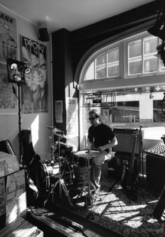
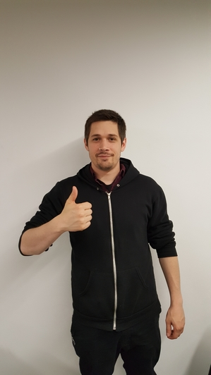

Raised in Hawaii, joined the Air Force Security Forces after I graduated King Kekaulike High School. Also graduated University of Hawaii Maui College, and spent time in the Air Force as Security Forces Airman.
After deciding to get into the tech industry through computer science, I decided to get my foot in the door in a big way by starting into it as a developer. Ideally using my VA benefits while working for a company to further my career. My family is my driving force, my daughter Gypsy my willpower. Will write code for cash.
Chelsea entered Code Fellows with a background in economics and politics, which she is excited combine with software development. When not coding, she enjoys reading, making mix playlists for friends, kayaking, and swing dancing.

Nathan is a Seattle native, an opera fan, and a giant nerd. His favorite food is pickles, he prefers dogs to cats, and he idolizes Jean-Luc Picard.
Matt is excited about trying to connect people to local AA meetings with minimal friction. In his free time, Matt likes watching hockey, reading, and learning new things.